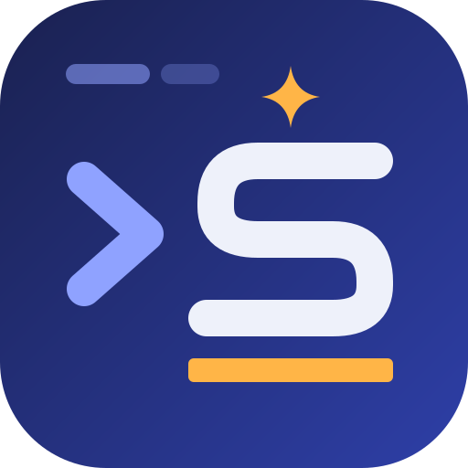

The AI is only asked when you trigger it — nothing is sent while you type. Start a line with # to describe what you want in plain words. Nothing runs until you pick a suggestion and press Enter; destructive suggestions are never run straight from the list. Commands that look like they contain credentials are never sent or saved.
#
Checked locally by TerminalS. You can change what's checked in Settings → Tools.
Added to the environment of new tabs only: they exist just inside the terminal's process and are never written to the registry (no setx). Secret values are encrypted with Windows DPAPI and can't be viewed again.
setx
No variables yet.
Runs in every new tab of this shell, after your normal profile. It's stored as a plain file, so keep credentials out of it and add them as secret environment variables instead.